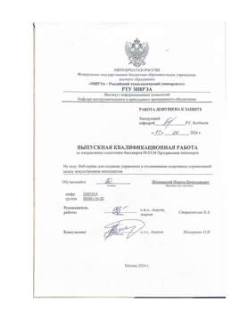
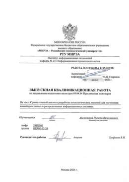

Никита Жизневский
Java/Kotlin-разработчик
Больше трёх лет делаю высоконагруженные банковские сервисы: заявки, офферы, карты, интеграции. Москва, удалённо или гибрид.
Пишу серверную часть банковских продуктов на Java и Kotlin: от обработки заявок и офферов до систем мониторинга мошенничества. Мне интересны нагруженные сервисы, чистая архитектура и то, как AI-инструменты ускоряют повседневную разработку.
Написать в TelegramРезультаты в цифрах
Опыт работы
Нажмите на компанию, чтобы увидеть проекты и результаты.
Технологии
С чем работаю каждый день.
Образование
Бакалавриат окончил с отличием, магистратуру — параллельно с работой. Нажмите на скан, чтобы открыть его крупно.
Магистр, программная инженерия
МИРЭА — Российский технологический университет, Москва. Направление 09.04.04, архитектура информационных систем.
Диплом выдан 7 июля 2026 Не красный дипломБакалавр, программная инженерия
МИРЭА — Российский технологический университет, Москва. Направление 09.03.04, разработка программных продуктов и проектирование информационных систем.
Диплом выдан 8 июля 2024 Красный диплом (с отличием)Профессиональная переподготовка
Программа «Менеджмент» в МИРЭА. Квалификация «Менеджер по информационным технологиям».
Диплом выдан 25 декабря 2024 Не красный дипломВыпускные квалификационные работы

Бакалаврская ВКР
Руководитель: Н.А. Стариковская, к.т.н., доцент
Тема: «Веб-сервис для создания, управления и отслеживания спортивных соревнований между искусственным интеллектом». Клиент-серверное приложение с ролевой моделью, чатом и микросервисом уведомлений. Результаты обсуждались на конференции «ИТ-Стандарт» 2024.

Магистерская диссертация
Руководитель: В.Н. Труфанов, доцент
Тема: «Сравнительный анализ и разработка технологических решений для построения конвейеров данных в распределённых информационных системах». Сравнение подходов к передаче изменений данных, нагрузочные эксперименты и модель рекомендаций по выбору подхода.
Дополнительные курсы
Сертификаты, которые дополняют основное образование.
Интерактивный тренажёр по SQL
Курс на Stepik от Дальневосточного федерального университета (ДВФУ).
С отличием Сертификат на StepikSQL Academy
Курс по SQL из теоретической и практической частей.
Летняя ИТ-школа КРОК
Направление «Разработка». Сертификат подписал директор по технологическому развитию КРОК.
Давайте обсудим задачу
Лучше всего писать в Telegram: @neketzzh
Почта: nzhigulevskiy@bk.ru
Ожидания: 200 000 ₽ на руки, полная или частичная занятость, удалённо или гибрид.